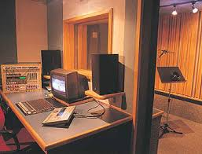

Estúdio de dublagem antigo
Os Primórdios (1930-1940)
A dublagem surgiu com o cinema sonoro no final dos anos 1920. No Brasil, os primeiros registros datam de 1938, quando a Cinédia realizou a primeira dublagem de um filme estrangeiro. O processo era artesanal, com equipamentos rudimentares e técnicas experimentais.
Nos anos 1940, a Atlântida Cinematográfica criou um setor de dublagem, marcando o início da profissionalização. As primeiras dublagens eram feitas por atores de rádio, que já tinham experiência com interpretação vocal.